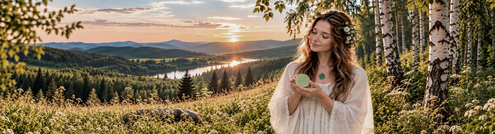

2009 год
Первые опыты с мылом стали началом производства «Леля».
О бренде
История компании началась в 2009 году с мыла ручной работы. Из первых рецептов выросло собственное производство натуральной косметики на Урале.
Вернуться на оптовый лендинг
Нам хотелось понимать, из чего сделаны средства для ежедневного ухода. Подходящую натуральную косметику тогда было трудно найти, поэтому мы начали с собственных опытов в мыловарении.
Первые рецепты мы дорабатывали вместе с химиками-технологами, косметологами и дерматологами. Для небольшой мастерской выбрали Урал, на границе Европы и Азии.
Первые опыты с мылом стали началом производства «Леля».
В начале года появились жидкие шампуни, которые изготавливали горячим способом. К концу года к ним добавились бальзамы для губ и зубные порошки.
Бренд выпускает больше 150 средств для лица, тела и волос. Команда разрабатывает рецептуры и производит косметику небольшими партиями.
Выбирая название, мы обратились к славянской культуре и традициям. В основе фирменного знака лежит Ладинец с элементами символики Лели.
Этот знак можно увидеть на упаковке и на самом мыле. Он связывает историю бренда с его первыми изделиями.
Расскажите, для какого магазина, салона или проекта подбираете косметику. Поможем с ассортиментом и первой закупкой.
Запросить оптовый прайс